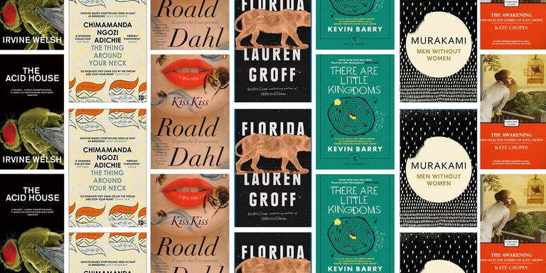

Short Story
Last December,
a short story by Kristen Roupenian called 'Cat Person' went viral.
It was a reminder of the power the form can wield, and a great advert for literature in an era dominated by other mediums.
Short stories,
of course, have the added advantage of being short, meaning you can digest them in small chunks - the perfectly alternative to staring at your iPhone for an hour before bed.
Here we round up 15 classic and modern short story collections that should be on everyone's radar.
It's not a definitive list, of course, but it's a great start for anyone who wants to read more fiction in 2018.